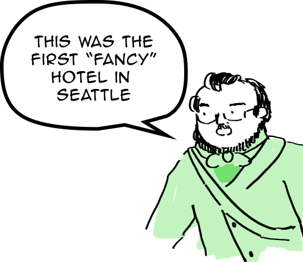
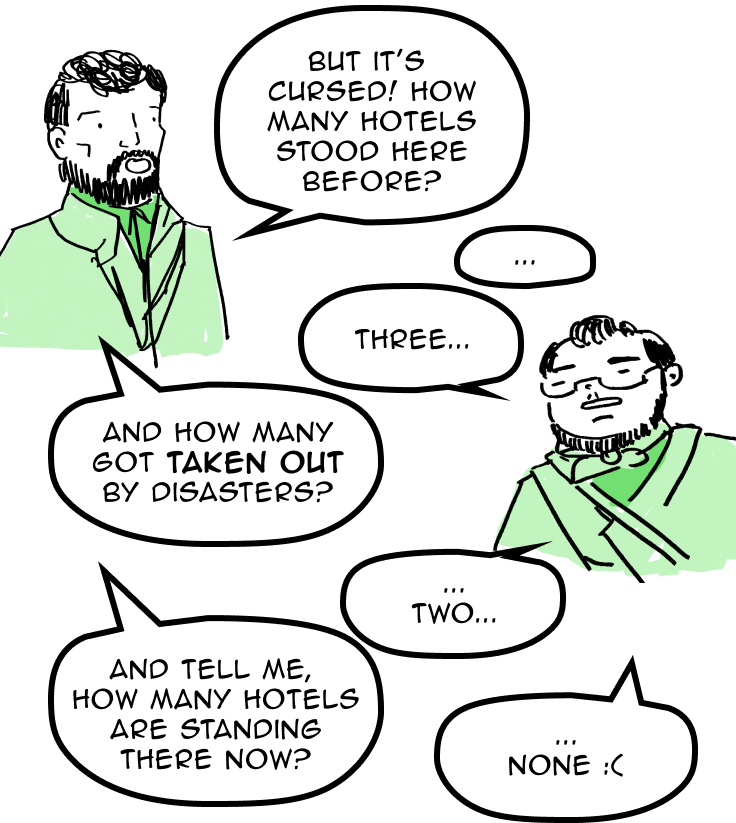
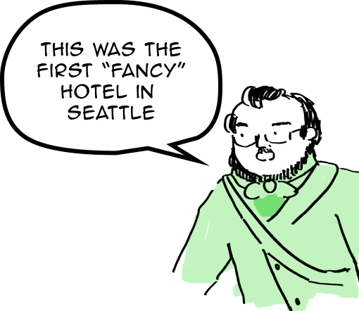
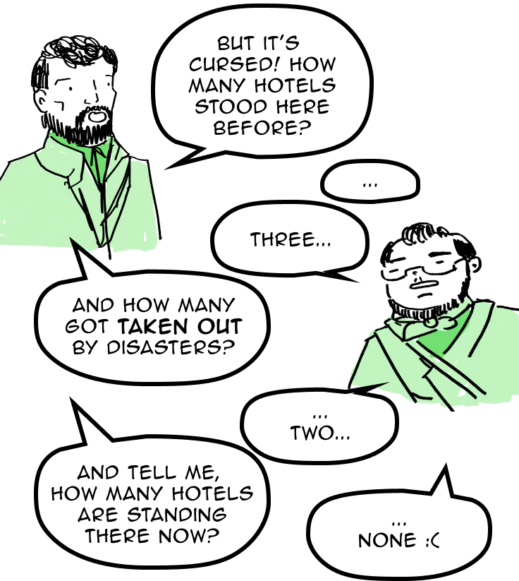

Here, where Yesler, 1st, and James meet, a triangle piece of land hosts a
unique parking garage called the “Sinking Ship”. Before this parking garage
was built here, it was the site of three Seattle hotels: the Occidental I,
the Occidental II, and the Hotel Seattle.
 


